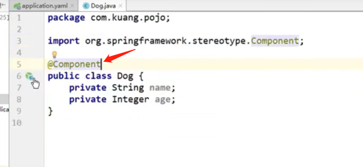
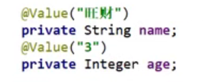
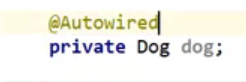
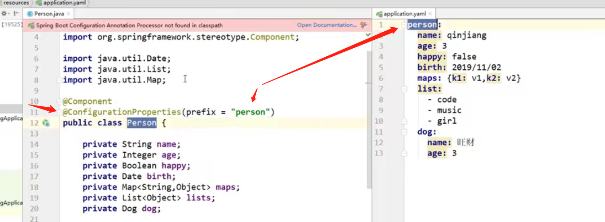
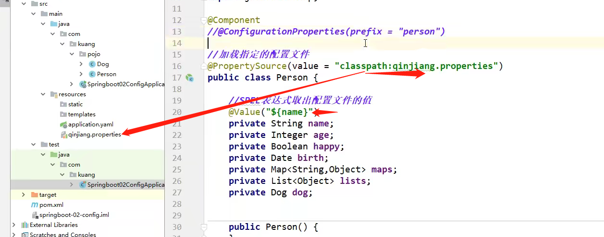
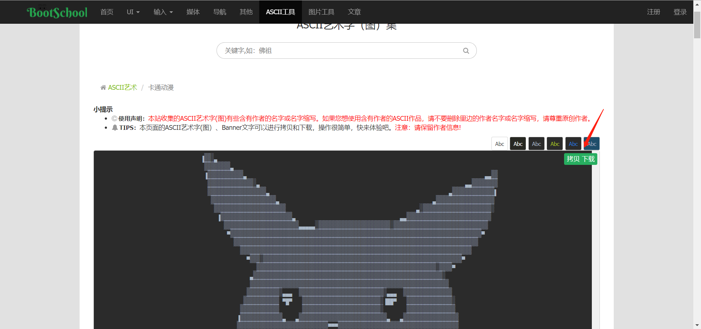

springboot
第一个springboot程序
简单注解：
@Controller放controller层
@RequestMapping和**@GetMapping**后面跟地址
@ResponseBody作用：让return后面的东西是字符串（不然的话是跳转”hello”这个界面）
@Component作用：把注解的东西放到springboot的组件当中

@Value(“xxx”) 作用：给对象的属性赋值。 位置：对象声明的上面

@Autwired作用：把对象装配过来

@ConfigurationProperties作用：实现配置类的值和配置文件绑定

@ConfigurationProperties和**@Value**的对比小结

- @ConfigurationProperties只需要写一次即可 ， @Value则需要每个字段都添加
- 松散绑定：这个什么意思呢? 比如我的yml中写的last-name，这个和lastName是一样的， - 后面跟着的字母默认是大写的。这就是松散绑定。可以测试一下
- JSR303数据校验 ， 这个就是我们可以在字段是增加一层过滤器验证 ， 可以保证数据的合法性
- 复杂类型封装，yml中可以封装对象 ， 使用value就不支持
结论：
- 配置yml和配置properties都可以获取到值 ， 强烈推荐 yml；
- 如果我们在某个业务中，只需要获取配置文件中的某个值，可以使用一下 @value；
- 如果说，我们专门编写了一个JavaBean来和配置文件进行一一映射，就直接@configurationProperties，不要犹豫！
@PropertySource 作用：指定配置文件，但是不用在用@ConfigurationProperties了，只能用@Value

**@Validated:**数据校验
例：@Email 如果数据错误，则报message里的信息

其他：


banner配置：
springboot banner自动生成的工具网站：https://www.bootschool.net/ascii

把复制/下载的东西放在resource目录下的banner.txt文件即可，重启项目
原理：
自动装配原理：
精髓
SpringBoot启动会加载大量的自动配置类
我们看我们需要的功能有没有在SpringBoot默认写好的自动配置类当中；
我们再来看这个自动配置类中到底配置了哪些组件；（只要我们要用的组件存在在其中，我们就不需要再手动配置了）
给容器中自动配置类添加组件的时候，会从properties类中获取某些属性。我们只需要在配置文件中指定这些属性的值即可；
xxxxAutoConfigurartion：自动配置类；给容器中添加组件
xxxxProperties:封装配置文件中相关属性；